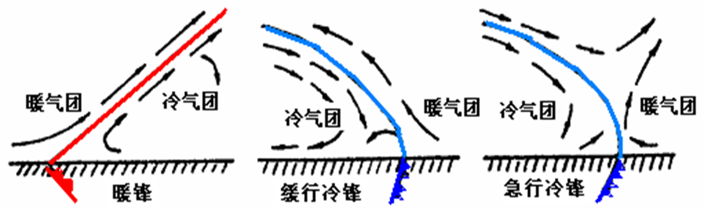
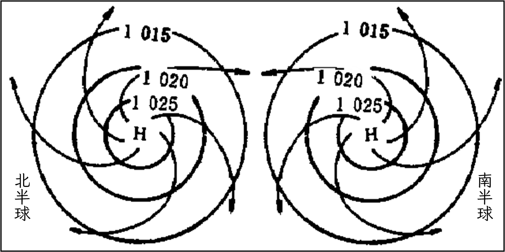
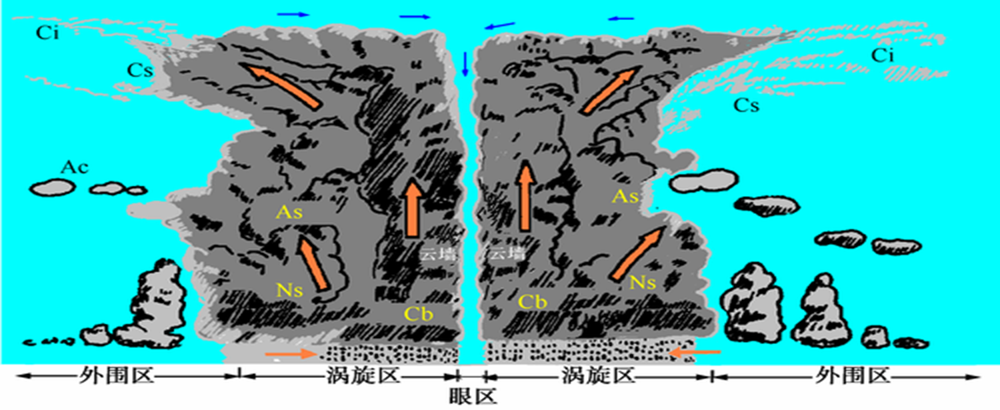
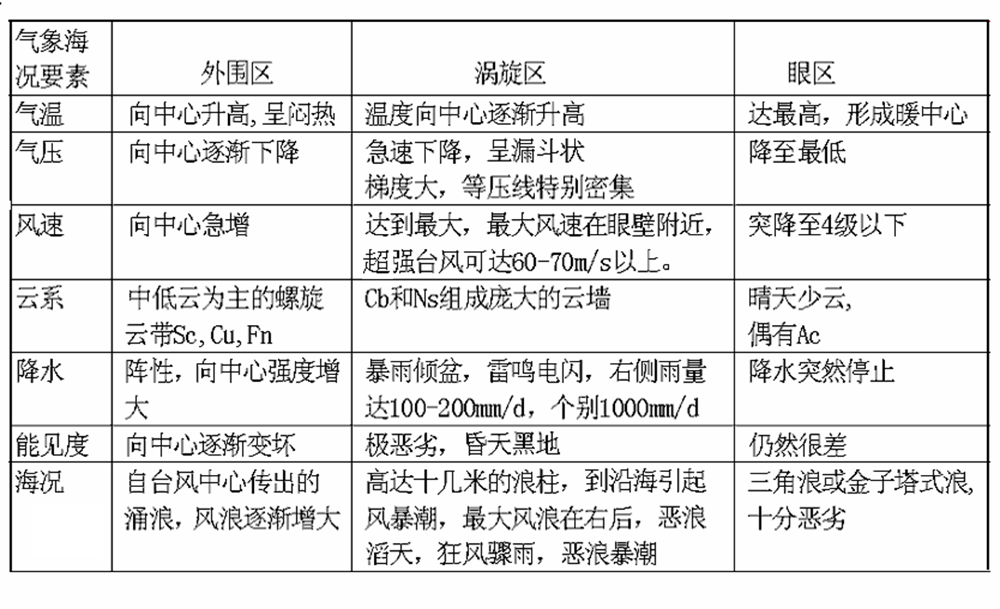

航海气象-天气系统
天气系统（synoptic system;weather system）是指具有一定的温度、气压或风等气象要素空间结构特征的大气运动系统。
1. 气团
在广大空间里存在着水平方向上物理属性（主要指温度、湿度和稳定度等）相对比较均匀的大块空气,称气团。
形成条件 ：
具备大范围物理性质比较均匀的下垫面: 如辽阔的海洋，浩瀚的沙漠，大面积冰雪覆盖的极区等。
稳定的环流条件: 使空气能比较长时间的缓慢移动在温、湿特性比较均匀的下垫面上，从而获得与下垫面相同的物理属性。
地区分类：
冰洋气团(Arctic air mass) ：65\(\circ\) 以上的极区。 冰洋大陆气团（Arctic continental air mass AC ） 特征：干燥、寒冷、气压高、晴朗、气层稳定。 冰洋海洋气团（Arctic maritime air mass Am） 特征：与AC相近， 夏季从海洋获得热量和水汽。
极地气团(Polar air mass)：纬度40～70\(\circ\)。 极地大陆气团（Polar continental air mass Pc ） 特征：干燥、低温、晴朗、低层逆温、气层稳定。 极地海洋气团（Polar maritime air mass Pm） 特征：潮湿、低温、多云、阴天。
热带气团(Tropical air mass):纬度10～40\(\circ\)。
热带大陆气团（Tropical continental air mass Tc） 特征：炎热、干燥，晴朗少云、低层不稳定。
热带海洋气团（Tropical maritime air mass Tm） 特征：气温高，湿度大，低层不稳定，中层有逆温，晴朗少雨。
赤道气团(Equatorial air mass):纬度10\(\circ\)以内。 特征：热湿、不稳定、多雷暴、阵性大风和阵性降水天气。
性质分类：
冷气团 (Cold Air Mass) 移向暖的下垫面的气团。具有不稳定的天气特点。
暖气团 (Warm Air Mass) 移向冷的下垫面的气团。具有稳定的天气特点。 另外，两气团相遇时相对暖的称暖气团，冷的称冷气团。
影响我国的气团：
冬季：我国大部分地区主要受变性极地大陆气团(Pc)的影响: 来自西伯利亚和蒙古的冷空气控制我国大部地区，一般多大风、降温天气。气候特点是干燥、晴朗、低温、多偏北风。如哈尔滨1月份平均最低气温-24.5℃，冰冻1米，地冻6尺。漠河是全国最冷的地方，冬季温度常在零下30～40℃，极端最低温度曾达到零下52.3℃。华南、西南等地受热带海洋气团(Tm)影响，潮湿多阴雨或雾。如四川雅安年降水量1800多mm，峨眉山年平均雾日322天，雨日260天左右。
夏季：我国沿海主要受变性热带海洋气团(Tm)影响: 气候特点是炎热、潮湿、多雷雨，如江淮“梅雨”。在闽浙、台湾一带降水量较大，基隆港年降水日平均214天，有“雨港”之称。台北的火烧寮年平均降雨量达6569毫米； 在我国西北主要受热带大陆气团(Tc)影响，干燥、炎热、少雨，在它的控制下常出现严重的干旱和酷暑。如吐鲁番，夏季,白天最高气温达49℃左右，夜间降到零度以下，日较差大。有些地方甚至几年滴雨不下。 云南、云贵高原南部受SW夏季风影响，形成了得天独厚的独特气候。如闻名于世的西双版纳则是四季如春。
春季：变性的极地大陆气团(Pc)和热带海洋气团(Tm)的势力相当，互有进退，因此是锋面和气旋活动最频繁的时期，降水丰富，天气比较复杂。
秋季：变性的极地大陆气团(Pc)开始活跃，变性热带气团(Tm)南退，我国出现最为宜人的秋高气爽天气
2. 锋
冷暖气团之间的狭窄过渡带称为锋。

锋的分类：
冷锋：在锋面活动过程中，冷气团势力强，推动暖气团后退，并迫使锋面向暖气团一侧移动。
暖锋：在锋面活动过程中，暖气团势力强，推动冷气团后退，并迫使锋面向冷气团一侧移动。
静止锋：在锋面活动过程中，冷、暖气团势力相当，互有进退，锋面很少移动，仅在小范围内摆动。
囚锢锋：冷锋移速快于暖锋，当冷锋追上暖锋后，或者两条冷锋迎面相遇，迫使暖气团抬离地面，锢囚到高空，近地层由冷锋后部的冷气团和暖锋前的冷气团构成的交界面
锋的主要特征
坡度
温度
气压
风场
锋附近的运动：
暖锋: 锋两侧冷暖空气均为上升运动。
冷锋：冷空气一侧通常为下沉运动，暖空气有时整层为上升运动，有时高层为下沉运动，低层为上升运动

暖锋天气：
云系：从高层到低层依次为Ci→Cs→As→Ns。
降水：在锋前300-400公里处产生连续性中或大雨。 气
温：气温逐渐升高。
气压：逐渐降低，暖锋前ΔP3有大的负变压。
能见度：最初较好，雨区能见度差。锋前50nm出现锋面雾。
风：北半球锋前吹E-SE风，锋后S-WS风，过境顺转；南半球锋前吹E-NE风，锋后N-NW风，过境逆转。风速大小视气压梯度而定。
垂直运动：一般锋附近的冷、暖空气均为上升运动。
锋面坡度：1/100—1/200。
第一型冷锋天气：
云系：由低层到高层依次为Ns→As→Cs→Ci，与暖锋相反。
降水：在锋线附近150-200Km和锋后，产生稳定性降水。若 锋前暖空气不稳定，伴有积雨云和雷阵雨天气。
气温：逐渐降低。
气压：逐渐升高，锋后有大的正变压。
能见度：锋过后变好。
风：北半球锋前S-SW，锋后N-NW，过境顺转；南半球锋前 N-NW，锋后S-SW，过境逆转。锋后气压梯度大，风也较大。
垂直运动： 冷空气下沉运动为主，暖空气多为上升运动。
锋面坡度：1/100。
第二型冷锋天气：
云系：锋前不稳定，为积状云，夏：Ac（As）,Cb，Fn；冬：Ci→、Cs→As→Ns。
降水：锋前及锋线附近常为雷暴和阵性降水。
气温：迅速下降。
气压：急速上升，锋后有最大正变压。
能见度：锋过后晴好。
风：风向与第一型相同，但锋面过境时，狂风暴雨，雷电交加，时间短暂,天气变化较第一型剧烈。
垂直运动：冷空气以下沉运动为主，暖空气一侧低层上升，高层下沉。
锋面坡度：约为1/50-1/70
准静止锋天气：
云系：与第一型冷锋相似，云系依次为Ns-As-Cs-Ci。
降水：连续性降水，降水强度小，持续时间长，连阴雨天气。
气温和气压：变化不大
风：北半球锋北侧E-NE，多阴雨天气；锋南侧SW，晴好天气。
锋面坡度：约为1/200
我国多见于华南、西南和天山北侧。造成华南“梅雨”天气。
囚锢锋天气：
云系由两条锋面的云合并而成，最显著的特征是云层增厚，降水增强，雨区扩大，锋两侧均有降水和锋面雾，天气较复杂。
3. 气旋
气旋：北半球逆时针旋转(南半球顺时针旋转)的水平空气涡旋
北半球地面流场为逆时针旋转向中心辐合，而南半球地面气旋流场为顺时针旋转向中心辐合。

强度(intensity)：气旋以低压中心气压值来表示。中心气压值越低，表示气旋越强，中心气压值越高，表示气旋越弱。
气旋的水平范围(horizontal coverage)：以地面天气图上最外围闭合等压线围成的近似圆形区域的直径表示，平均为1000 km，大的达2000～3000 km，小的只有300～500 km。
分类：
根据气旋形成和活动的地理区域，将气旋分为温带气旋(Extratropical cyclone)和热带气旋(tropical cyclone) 。
根据气旋的热力结构，将气旋分为锋面气旋(Frontal cyclone)和无锋面气旋。无锋面气旋包括热带气旋和热低压。
4. 锋面气旋
一般由两个或三个气团组成。在气旋中心向前方伸出一条暖锋，向后方伸出一条冷锋。冷、暖锋之间是暖空气，冷、暖锋以北是冷空气。北半球，风以逆时针方向向中心辐合（南半球顺时针），中心区有上升运动，故多为阴雨天气。中心气压最低，在中、高纬度海洋上强烈发展的锋面气旋，伴生的大风和海浪都非常剧烈。气旋中心气压越低，水平气压梯度越大，风速也就越大。锋面气旋频繁产生和活动于温带地区，是影响中高纬大洋航线天气的主要风暴系统。在发展强盛的锋面气旋中，其地面最大风速可达32.6m/s或以上(12级)。


5. 冷高压
在北半球作顺时针旋转（南半球逆时针旋转）的水平空气涡旋称反气旋。由闭合等压线围成的，中心气压比四周高的系统称高压。

分类：
根据反气旋形成和活动的地理区域，将反气旋分为极地反气旋、温带反气旋和副热带反气旋(Subtropical anticyclone) 。
根据反气旋的热力结构，将反气旋分为冷性反气旋和暖性反气旋。活动于中、高纬的温带反气旋属冷性反气旋，又称冷高压。阻塞高压和副热带高压属暖性反气旋。
寒潮：
寒潮冷锋过境前，天气温暖，晴朗多为偏南风。 冷高压前部：冷锋过境后,气温剧降，气压急升，偏北大风，风力猛增，海上达6-8级，最大达12级，大风持续1-2天。有时伴有降水，海面产生大浪，主要恶劣天气在冷高压前部。寒潮入侵我国后，先在黄、渤海引起大风浪，然后逐渐向东海、南海扩展,甚至扩展到越南、菲律宾一带。
冷高压中部：前部过后,进入冷高压中部,天气多为晴朗、微风、少云、干冷。
冷高压后部：中心过后进入冷高压后部,气温回升，偏南微风，沿海有时形成平流雾。
6. 副热带高压
7. 热带气旋
热带气旋 (Tropical cyclone)是发生在热带洋面上一种发展强烈的暖性的气旋性涡旋，是大气中极强烈的风暴，被称为“风暴之王”。具有极大的破坏力，严重威胁海上船舶航行安全。
台风：指发展到强烈程度(风力≥12级)的热带气旋。 范围：以系统最外围近似圆形等压线的直径表示。平均直径在600-1000Km，大的2000Km，小的几百Km。 强度：以中心最低气压或近中心附近最大风速表示。一般中心气压在960hPa左右,最低870hPa,风速一般可达30-70m/s，个别可达 100 m/s.
热带气旋天气: 狂风、暴雨、巨浪、暴潮。
热带气旋的分布
热带气旋的特点
热带气旋的结构：


热带气旋典型案例
热带气旋形成和消亡
移动路径
船舶和热带气旋的结合：
沿着热带气旋进路过中心将热带气旋分成两个半圆，即左半圆和右半圆。 北半球，左半圆为可航，右半圆为危险。 南半球，右半圆为可航，左半圆为危险。 危险象限：北半球在右前象限。 南半球在左前象限。
北半球热带气旋风绕中心逆时针吹，右半圆的风向与热带气旋移向一致，两者迭加风速增大。 北半球热带气旋转向向右，在右前象限易被吹进热带气旋中心，不易驶离。 北半球热带气旋右半部与副热带高压相邻，气压梯度大。
根据真风向随时间的变化判定：1、当真风向随时间顺时针方向变化时，表明船舶处在右半圆（北半球为危险半圆）。2、当真风向随时间逆时针方向变化时，表明船舶处在左半圆（南半球为危险半圆）。3、当风向稳定少变，船在热带气旋进路上。
根据风速和气压判定： 若风速增大、气压降低 ，船舶处在热带气旋前半圆。 若风速减小、气压回升 ，船舶处在热带气旋后半圆。

1.若船舶处于北半球热带气旋右半圆，使船首右舷顶风，保持风从右舷10-45而来,全速避离。
2.若船舶处于北半球热带气旋左半圆，使右舷船尾受风，保持受风角度30-40,全速避离。
3.若船舶处于南半球热带气旋左半圆，使船首左舷顶风，保持风从左舷10-45而来,全速避离。
4.若船舶处于南半球热带气旋右半圆，使左舷船尾受风，保持受风角度30-40,全速避离。
当热带气旋来临时，在近海航行的船舶应及时避离，选择封闭式或背风的港口避风。如果没有这种条件，则应将船驶向外海深水中，全力以赴准备抗御。切不可犹豫不决，停留在近岸浅水海域或迎风港口中。
注意：对热带气旋一定要避离或绕航，与热带气旋中心保持一定的距离，绝对不能盲目穿越或尾随航行。
8. 其他异常天气
雷暴(Thunderstorm) ：指积雨云中发生的雷电交加的激烈放电现象。雷暴属小尺度天气系统，水平尺度仅10km左右，时间尺度几十分钟。通常伴有暴雨、阵性大风、有时有冰雹、龙卷等强对流天气。
飑线定义：由若干排列成行的雷暴单体或雷暴群组成的狭窄强对流天气系统。
龙卷：气中一种小范围、强烈对流旋转的空气涡旋。一般与强对流云相伴出现。发生在水面上称水龙卷，在陆上称陆龙卷。